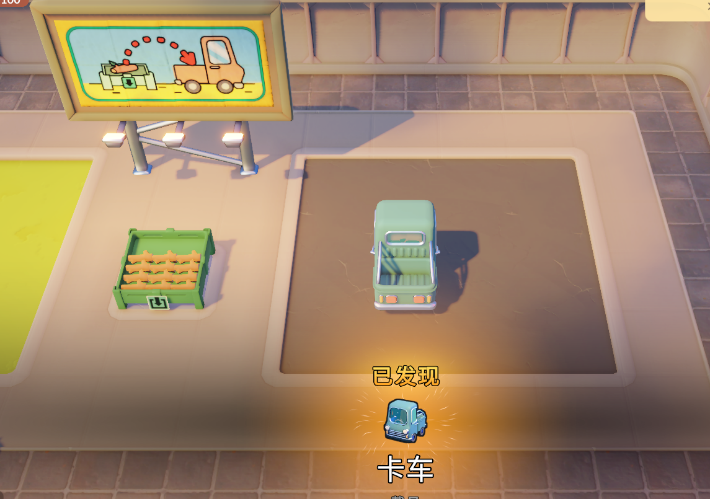

Go-Go Town Guide
Checklist-first Go-Go Town! guides for new mayors who want a calm first week—not a wiki dump.
Built for the questions new mayors actually ask
You do not need every building unlocked on day one. You need a short plan for roads, shops, workers, trucks, and what to ignore until later.
Roadmap: Starter guides for the first week—tutorial flow, carrying goods, trucks, and workshop transfer—with screenshots from our Story Mode save. More topics coming as we play.
Guides
Starter guides below are live—open any checklist and play at your pace.
Live
First week checklist
Story Mode start, talk to the Town Group Rep, and a calm opening loop.
Live
Carry goods without panic
Pick up wood, fill bins, and follow the billboard arrows.
Live
Trucks & early logistics
Discover the truck, load crates, and keep cargo moving.
Live
Workshop transfer basics
Nearby storage, backpack slots, and the Transfer button.